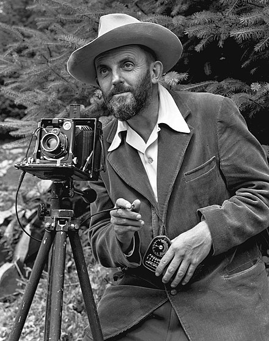

"A great photograph is one that fully expresses what one feels,
in the deepest sense, about what is being photographed."
- Ansel Adams
Overall Design
I tried to make a professional looking website by including clean lines and minimal aesthetics and colours. I only used five colours through out my website and each of them were complementary so as not to be an eyesore.
These colours were selected (as discussed below) after the background image was chosen.
Technical Aspects
This website is structured according to the W3 Schools website, and the HTML and CSS standard on the W3 Validator and CSS Validator.
When I first started making this website, I was getting frustrated with the layout of the elements on the page. I didn't realise how important classes and inheritance was. I was trying to centre some text by assigning a class to it but didn't realise that the parent class's width was only 50%. So when I centred the text, it only centred it within the 50% "box" I had defined in the parent class. It took me many hours of research to realise this but once I did, I was able to fix the situation and apply it to the other pages as well.
This also allowed me to make my code more efficient and easier to read by removing excess classes I had set up trying to position various elements on the screen. This makes it easier for other developers to read the code and enables me to make adjustments in the code more easily.
Lastly, HTML tags were really useful when creating this website. It allowed me to split each page into smaller "blocks", which made it easier to visualise each section of the website. For example, each page is split up into a head and body section and each body section is split up into numerous boxes which contain information.
Asthetics
Since one of my hobbies is photography, I decided to use an image I had taken as the background. I tried to choose a simple image with bright colours so that the website did't look dull.
After choosing the background image, I needed to coordinate the colours for the rest of the website so that they wouldn't clash. I used an online colour palette generator to extract five colours from the image and used those for my website.
I used boxes with a drop shadow to wrap the information on my website and make it pop out to the user. This made the text more defined, easier to read and nicer to look at.
I also used a sans-serif font which aided in the professional look I was going for and makes it easier for people to read by eliminating the extra lines and strokes attached to the letters.
I made sure to choose a navigation bar that was professional looking and fit in with the rest of the website. I also implemented a hover effect so that the user will know where their mouse is on the navigation bar. The bar also has an "orange box effect" so that the user knows which section they are currently in.
Accessibility
I made sure that the text wasn't too difficult to read by setting a larger font size and also bolding certain aspects of the website to make it pop out. I was able to test this by asking my family members (who wear glasses) if they had any trouble reading the text.
Another really important aspect of accessibility is catering to those who have colour blindness. It was quite difficult to assess whether my website was viewable by people with colour blindness as there are so many different variations. However, I did my best by making sure that I only used five complementary colours throughout my whole website. For the visually impaired, I have also added image descriptions by utilising the HTML img alt attribute which can help people when using a screen reader.
Keyboard access is another really important aspect of accessibility as not everyone is able to use a mouse. I have made sure that that my website can be navigated solely using a keyboard (by using the arrow, tab and enter keys).